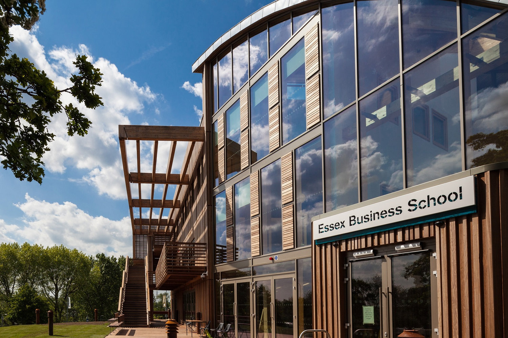
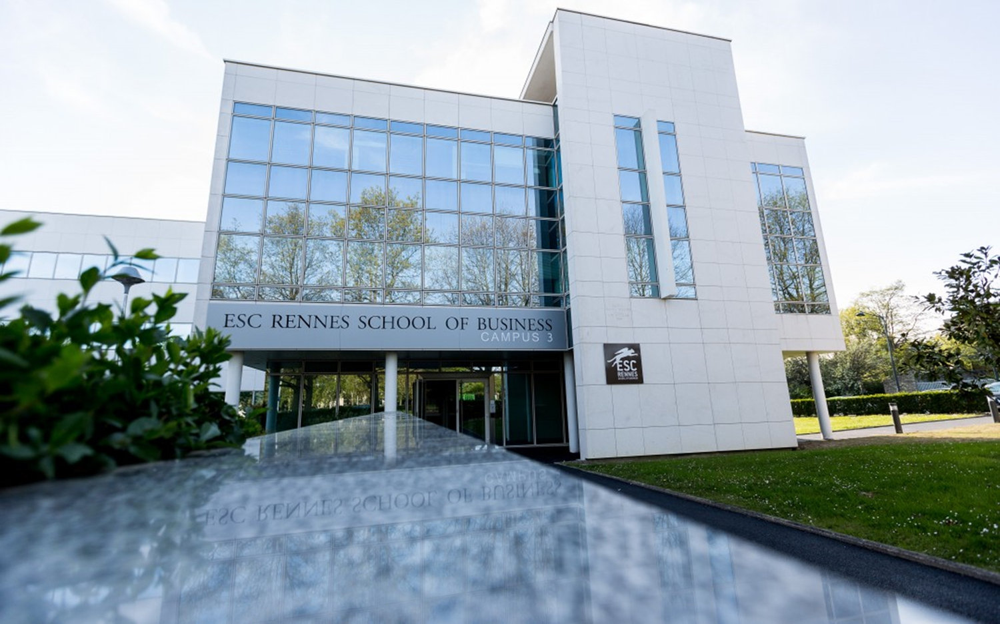

UNITED KINGDOM
英國艾塞克斯大學
University of Essex
碩士 1+1 雙聯原站所列申請條件
- 學業平均成績 70 分以上
- IELTS 6.5
- 逢甲碩一修滿 24 學分
A GLOBAL NEXT STEP
探索國際雙聯學習，在不同文化與市場之間，打開你的行銷視野。
DUAL DEGREE PATHWAY
先在逢甲完成第一階段學習，再申請合作院校。符合兩校課程與畢業要求後，可依合作協議取得雙方學位。
修業年限、學費、語言及畢業要求依當年度協議與合作校審核；雙聯學位須經申請，並非入學後自動取得。


UNITED KINGDOM
University of Essex
碩士 1+1 雙聯
FRANCE
Rennes School of Business
國際雙聯學習資料來源：原站國際雙聯資訊 · 資料核對：2026.11.26
PLAN YOUR JOURNEY
了解合作科系、課程及學位要求，與系辦討論合適的進修路徑。
依合作院校要求規劃語言檢定及在校學分，及早安排申請文件。
依兩校公告送件，確認錄取、費用與學分採認後安排海外學習。
YOUR NEXT CHAPTER
把對品牌的好奇，轉化為面向全球的行銷能力。
探索入學方式